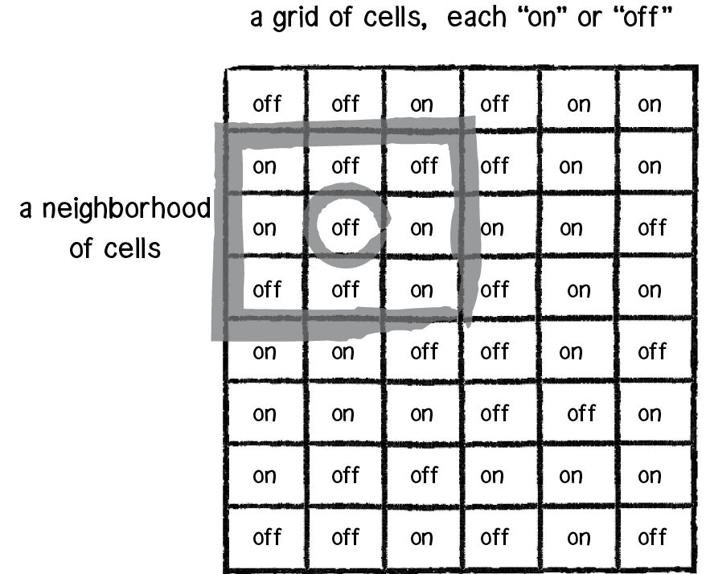

We use two tiles for our map, 'land' and 'water.
We create a grid of empty tiles and then iterate over each setting them
randomly to 'on' or 'off'.
In our case, 'on' being land and 'off' being water.
At this stage we can use a value between 0 and 1 as an Initial Ratio of
land to
water in order to influence this first step of the generation.
If we set the Initial Ratio
< 0.5 we yield more land. > 0.5 and we yield more
water.
Next, we use cellular automaton.

We iterate over each tile again, this time assessing each of the 8
neighbouring tiles.
If the number of neighbouring water tiles is greater than a defined
Neighbour Threshold, the current tile will be set to water and the same vice versa.
Changing the Neighbour Threshold will also influence the end result.
Lastly, we can run multiple cellular automaton Cellular Automaton Passes over our
tilemap to refine the end result even further.